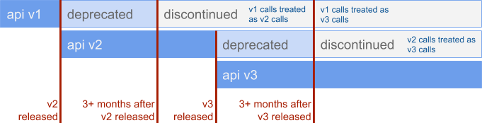
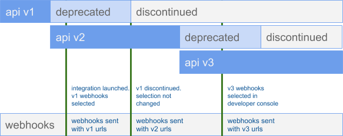

Data API Deprecation Policy
Policy last updated 8/12/19
Overview
Welkin's API supports versioning so that as Welkin's Data API evolves and grows, integration developers can adapt to changes over time without interruption to their patient and staff experience. Welkin's versioning system and process outlined below provides for a migration period anytime a non-backwards-compatible change is made to the Data API. This migration period gives developers time to update their code and migrate their integration to the new version before the old version is discontinued.
Why does Welkin have versions?
Welkin has API versions to give developers building Welkin integrations ample time to understand upcoming non-backwards-compatible changes and migrate their code in advance of when an API endpoint will change.
Welkin releases new features to the Data API regularly and as the product evolves there will be changes to the Data API endpoints which don't work with previously implemented integrations. To ensure that these changes don't break existing integrations, a deprecation and migration period is provided in which both the deprecated version of the Data API and the new version will operate in parallel.
Version Schedule
Welkin provides a 3 month migration period after a new version is released in which both versions will operate. Welkin will discontinue support for deprecated versions of the Data API no earlier than 3 months after the subsequent version is released. Welkin will notify customers with as much notice as possible before the 3-month migration period begins.
For example: If API version v2 is released on March 25th, 2019, and API version v3 is released August 7th, 2019, then v2 would be discontinued no earlier than November 7th, 2019, 3 months after the release of v3.
After the deprecation period has elapsed, requests made with the discontinued version number to endpoints which remain unchanged will be routed internally by Welkin to the oldest active version. Requests made with the discontinued version number to endpoints which have changed will return a 400 error indicating that the endpoint has changed and the request is invalid.
Below is an example release timeline:

Developers can find specific information about our versions, non-backwards-compatible changes, and release dates on our changelog page.
How will Welkin notify developers when an API version is deprecated and discontinued?
Welkin will use commercially reasonable methods to notify developers using the Data API of the following: new API versions, deprecations of API versions, and discontinuations of API version.
These notifications will be sent via the developers listserve, posts on Welkin's knowledge base, and programmatically via API response headers. Welkin's Customer Success Managers will also communicate with customers to inform them as to which changes are likely to affect their implementations of Welkin.
Emails will be sent to the developers listserve when a new API version is released (thus deprecating the old version) and when an API version is going to be discontinued.
All API responses will contain a x-current-api-version header which will be set to the current version of the Data API, a x-api-deprecated header when calling any deprecated API versions, and a x-api-discontinued header when calling any discontinued API versions.
Definitions
Terms used in this policy have specific meaning. They are defined below.
Version
This refers to the version number found in the URL path of any API request, for example: GET /v{version_number}/patients. This style of versioning is known as URI versioning.
Non-backwards-compatible changes
Non-backwards-compatible changes are any changes that require developers to make changes to maintain existing functionality. Breaking changes include things like:
- Removing a parameter from a request or response schema
- Modifying the name for any parameters or endpoints
- Change in the type of a parameter
- Adding a required parameter
- Changing the semantics of a parameter value
- Changes to error codes or error messages to existing endpoints
- Removal of an API endpoint
- Change in defined behavior of an endpoint
Deprecation
Deprecated versions or products will be discontinued in the future and it is recommended that developers cease to use these API versions.
Discontinued
Once an API version is discontinued, use of the corresponding version in requests to Welkin's API will result in Welkin routing requests to unchanged endpoints to the oldest available version. See Version Schedule for details.
FAQS
Answers to frequently asked questions.
What is the latest Welkin REST API version?
Developers can find specific info about our versions, non backwards compatible changes, and release dates on our changelog page.
What is the length of the migration period?
3 months. After the three month migration period has elapsed, Welkin may discontinue an API version at any time.
For example, if v2 is released on January 2nd, 2020, then v1 will be discontinued on or after March 2nd, 2020.

What constitutes a non-backwards-compatible change for Welkin's Platform API?
See definitions section above.
Will everything remain completely unchanged in a version?
No. Welkin may add new API endpoints, add new optional request fields to existing endpoints, add new fields to API responses, and enable HTTP request types to existing endpoints, at any time without changing the API version. Once added the mentioned additions will not be removed or changed without following this deprecation policy.
Welkin reserves the right to make non-backwards-compatible changes to any API with a short deprecation and discontinuation period for urgent issues related to security, privacy, or system stability. These changes will be very rare, but they can happen. Welkin will take commercially reasonable steps to mitigate the effect of these changes on its customers.
What happens if developers don't specify a version for a call to the Data API?
Developers must include a version number in their requests to the Welkin API. Unversioned requests are not supported.
Can an app make calls to versions older than the current version?
Yes. An app can make calls to any version of the Data API that is currently active. Calls to discontinued versions will be routed internally by Welkin to the oldest available version if the endpoint being called has not had non-backwards-compatible changes between the two versions. An HTTP response header will be set indicating that the version called is discontinued.
Does this mean Welkin will release an API version every 3 months and developers will have to update their code frequently?
No. Welkin's API deprecation policy only specifies the minimum length of time developers have to migrate and the process by which a migration would be facilitated. Additionally, this policy and required migration only applies for non-backwards-compatible changes.
Welkin adds new features to the Data API regularly, but it is infrequent that these changes are non-backwards-compatible. Developers only need to make changes to their code when non-backwards-compatible changes have been made to endpoints they use.
Are all endpoints versioned at the same time?
Yes. API versions apply across all endpoints regardless of if they have a non-backwards-compatible change or not. Which endpoints have non-backwards-compatible changes will be listed in the release notes and notifications.
Note, as mentioned in Can an app make calls to versions older than the current version? if the changes made to the Data API do not affect a specific integration they can continue to call the Data API with old versions.
How are Welkin's change notification webhooks versioned?
The data change notifications that Welkin sends to subscribed services contain a versioned url. For details on how change notifications work in the Welkin API you can find the documentation here.
The format of these webhooks is also versioned and the format may change per this policy.
In the Welkin Integration Tools, developers will be able to select the version of the Data API that the webhooks use for their integration. Developers can change this setting at the time of their choosing.
When an API version is discontinued, if a developer has not updated the webhook version in Integration Tools, Welkin will send the oldest active version of webhooks to that integration.
How does this policy get updated?
API versions are released under the version of this policy that was live on the date that the API version was released. Changes to this policy take effect on future versions of the Data API and will be communicated via the channels set out for notifying developers of API versions. Changes to this policy do not affect API versions that are currently in use.
Does Welkin have a Beta program for the Data API?
Yes. Welkin occasionally releases new features to select customers as part of betas. These beta programs and features are not subject to this policy and are managed on a case by case basis with the customers currently in each beta.